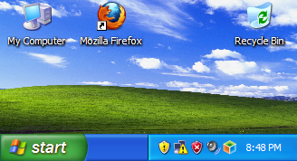

Chrome OS (sometimes styled as chromeOS) is a Gentoo Linux-based operating system designed by Google. Unlike Chromium OS, Chrome OS is proprietary software.
 Chrome OS has an integrated media player and file manager.
It supports Progressive Web Apps and Chrome Apps, these resemble native applications, as well as remote access to the desktop.
As more Chrome OS machines have entered the market, the operating system is now seldom evaluated apart from the hardware that runs it.
Chrome OS has an integrated media player and file manager.
It supports Progressive Web Apps and Chrome Apps, these resemble native applications, as well as remote access to the desktop.
As more Chrome OS machines have entered the market, the operating system is now seldom evaluated apart from the hardware that runs it.
 Chrome OS is only available pre-installed on hardware from Google manufacturing partners, but there are unofficial methods that allow it to be installed in other equipment. Its open-source upstream, Chromium OS, can be compiled from downloaded source code. Early on, Google provided design goals for Chrome OS, but has not otherwise released a technical description.